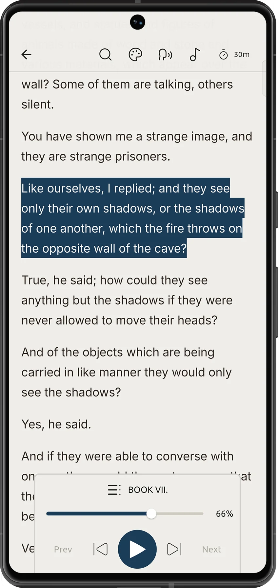
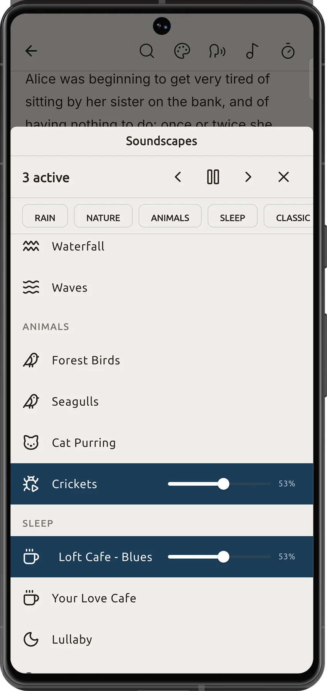
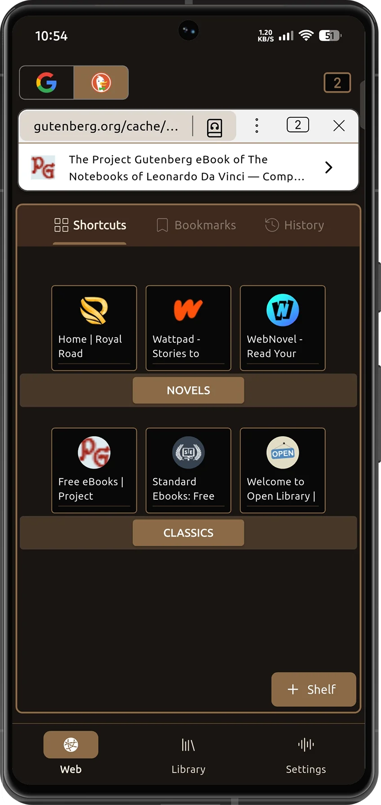

Put your book on, then put your phone down.
Journey Reader turns any book or article into an audiobook with AI voices that run on your device. Keep listening with the screen off.
- Import EPUB, PDF, and saved web articles
- Jump by chapter, with progress and time left
- Highlight text and keep reading where you stopped
- Sleep timer for bedtime listening

Build your own soundscape.
Layer rain, crickets, a cat purring, or a late-night café, and set each volume to taste. Stack as many as you like and keep them playing while you read.
- Rain, nature, animals, sleep, and classic sets
- Separate volume for every sound
- Pause, skip, or clear all in one tap

A browser made for reading.
Find a story on the web and read or listen to it right away. The built-in ad blocker removes clutter, and one tap saves the article to your library for offline use.
- Built-in adblocker
- Shortcuts to Royal Road, Wattpad, WebNovel, and more
- Save any article to read later, offline
- Switch between Google and DuckDuckGo

Built for long reading sessions.
Private by design
Your books and reading history stay on your phone. No sign-up required.
Reading tools
Search inside a book, change themes, and adjust the type to suit your eyes.
Offline everywhere
Flights, commutes, and weak signal. Your library and voices work without a connection.
Organized library
See progress and time left for every title, and archive finished books.